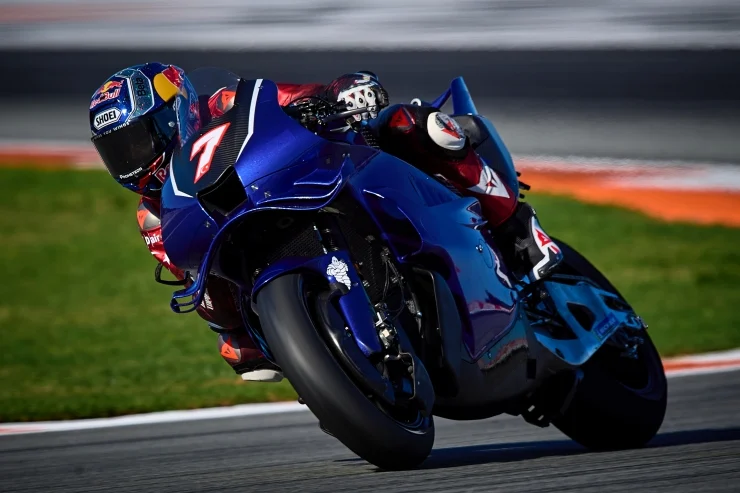

El Turco MotoGP Testinde Pistin Tozunu Attırdı
Dünya Superbike Şampiyonu milli gururumuz Toprak Razgatlıoğlu, Yamaha'nın M1 MotoGP motosikletiyle İspanya'nın Jerez pistinde gerçekleştirdiği testlerde tüm dikkatleri üzerine çekti.
Devamını Oku →